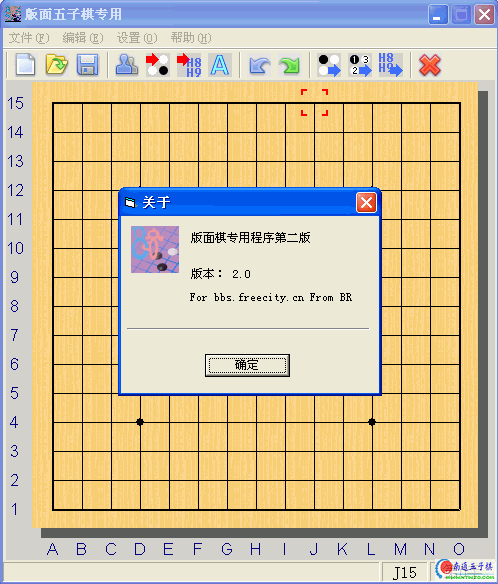
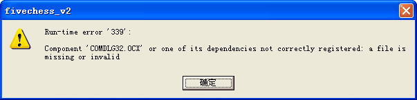

五子棋版面专用程序第二版
#1 五子棋版面专用程序第二版 作者：有志青年 发表时间：2007-2-23 17:56:54

fivev2
在棋盘上摆好棋子以后，选择编辑->输出棋盘
然后在bbs发文界面"带ascii色彩粘贴"，就可以把下的棋输出到bbs上了
效果如下：
南通 ●VS○ 五子棋
15┏┯┯┯┯┯┯┯┯┯┯┯┯┯┓
14┠┼┼┼┼┼┼┼┼┼┼┼┼┼┨
13┠┼┼┼┼┼┼○┼┼┼┼┼┼┨
12┠┼┼●○●○●○●○●┼┼┨
11┠┼┼┼┼┼┼●┼┼┼┼┼┼┨
10┠┼┼┼┼┼○┼┼┼┼┼┼┼┨
9┠┼┼●○○●●○●○●┼┼┨
8┠┼┼○┼┼●＋○┼┼○┼┼┨
7┠┼┼●┼┼●○●┼┼●┼┼┨
6┠┼┼○┼┼○●○┼┼○┼┼┨
5┠┼┼●┼┼┼●┼┼○●┼┼┨
4┠┼┼＋┼┼┼┼┼┼┼＋┼┼┨
3┠┼┼┼┼┼┼┼┼┼┼┼┼┼┨
2┠┼┼┼┼┼┼┼┼┼┼┼┼┼┨
1┗┷┷┷┷┷┷┷┷┷┷┷┷┷┛
ＡＢＣＤＥＦＧＨＩＪＫＬＭＮＯ
下载地址：
如果遇到下列问题请注意：

那是因为缺少ocx文件，请下载下面的附件，并复制到系统盘符〔c盘〕下的windows/system32文件夹中
#2 Re:五子棋版面专用程序第二版 作者：极地剑客 发表时间：2007-2-25 3:36:43
HOHO~青年也搞到这个啦~#3 Re:五子棋版面专用程序第二版 作者：无尽 发表时间：2007-2-25 13:17:56
Run-time error '339'
#4 Re:Re:五子棋版面专用程序第二版 作者：有志青年 发表时间：2007-2-25 13:46:17
引用：
原文由 无尽 发表于 2007-2-25 13:17:56 :
Run-time error '339'
无尽是啥操作系统？
#5 Re:五子棋版面专用程序第二版 作者：潇洒 发表时间：2007-2-25 15:23:59
我和无尽一样，一打开就显示有错误。。#6 Re:Re:五子棋版面专用程序第二版 作者：有志青年 发表时间：2007-2-25 16:08:02
是这个问题吗？
那是因为缺少ocx文件，请下载下面的附件，并复制到系统盘符〔c盘〕下的windows/system32文件夹中
 COMDLG32.rar
COMDLG32.rar
#7 Re:五子棋版面专用程序第二版 作者：极地剑客 发表时间：2007-2-25 19:11:18
理由同上~必须先安个东东~HO~青年誓要把所有连珠相关软件都收集齐全呀~#8 Re:五子棋版面专用程序第二版 作者：潇洒 发表时间：2007-2-25 19:24:26
是的。。就是这个问题。。#9 Re:五子棋版面专用程序第二版 作者：有志青年 发表时间：2007-2-25 19:32:53
怀疑以上问题是由于安装的ghost版本xp吧，可能被精简过了。
#10 Re:五子棋版面专用程序第二版 作者：luws 发表时间：2008-12-3 15:06:11
也有手机S60V3版吗#11 Re:五子棋版面专用程序第二版 作者：山海棠 发表时间：2010-5-23 20:20:41
为什么我用的时候粘贴是乱码呢？？？？？
15[0;43;30m©³©Ó©Ó©Ó©Ó©Ó©Ó©Ó©Ó©Ó©Ó©Ó©Ó©Ó©·[m
14[0;43;30m©Ä©à©à©à©à©à©à©à©à©à©à©à©à©à©Ì[m
13[0;43;30m©Ä©à©à©à©à©à©à©à©à©à©à©à©à©à©Ì[m
12[0;43;30m©Ä©à©à[1;32m£«[0;43;30m©à©à©à©à©à©à©à[1;32m£«[0;43;30m©à©à©Ì[m
11[0;43;30m©Ä©à©à©à©à©à©à©à©à©à©à©à©à©à©Ì[m
10[0;43;30m©Ä©à©à©à©à©à©à©à©à©à©à©à©à©à©Ì[m
9[0;43;30m©Ä©à©à©à©à©à©à©à©à©à©à©à©à©à©Ì[m
8[0;43;30m©Ä©à©à©à©à©à©à[5m¡ñ[0;43;30m©à©à©à©à©à©à©Ì[m
7[0;43;30m©Ä©à©à©à©à©à©à©à©à©à©à©à©à©à©Ì[m
6[0;43;30m©Ä©à©à©à©à©à©à©à©à©à©à©à©à©à©Ì[m
5[0;43;30m©Ä©à©à©à©à©à©à©à©à©à©à©à©à©à©Ì[m
4[0;43;30m©Ä©à©à[1;32m£«[0;43;30m©à©à©à©à©à©à©à[1;32m£«[0;43;30m©à©à©Ì[m
3[0;43;30m©Ä©à©à©à©à©à©à©à©à©à©à©à©à©à©Ì[m
2[0;43;30m©Ä©à©à©à©à©à©à©à©à©à©à©à©à©à©Ì[m
1[0;43;30m©»©Û©Û©Û©Û©Û©Û©Û©Û©Û©Û©Û©Û©Û©¿[m
£Á£Â£Ã£Ä£Å£Æ£Ç£È£É£Ê£Ë£Ì£Í£Î£Ï
Steps: S001
H08